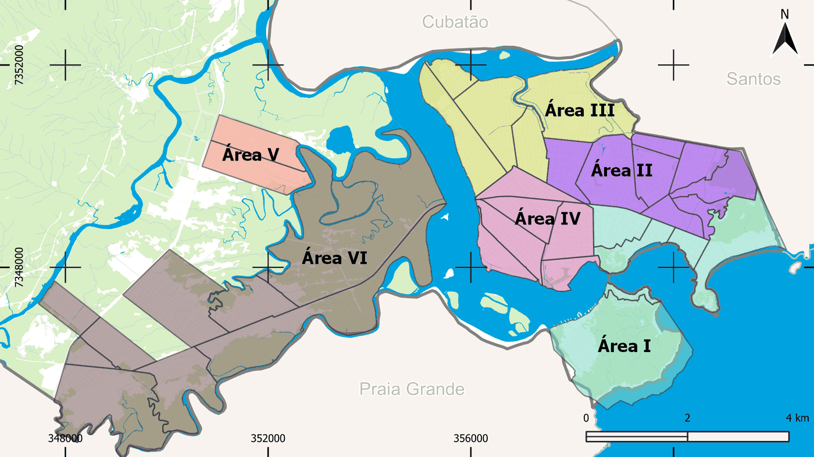
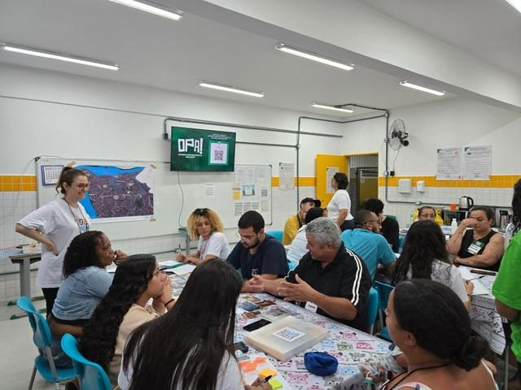
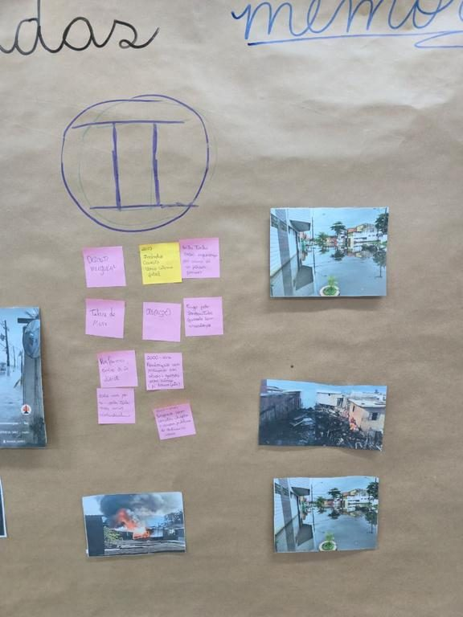
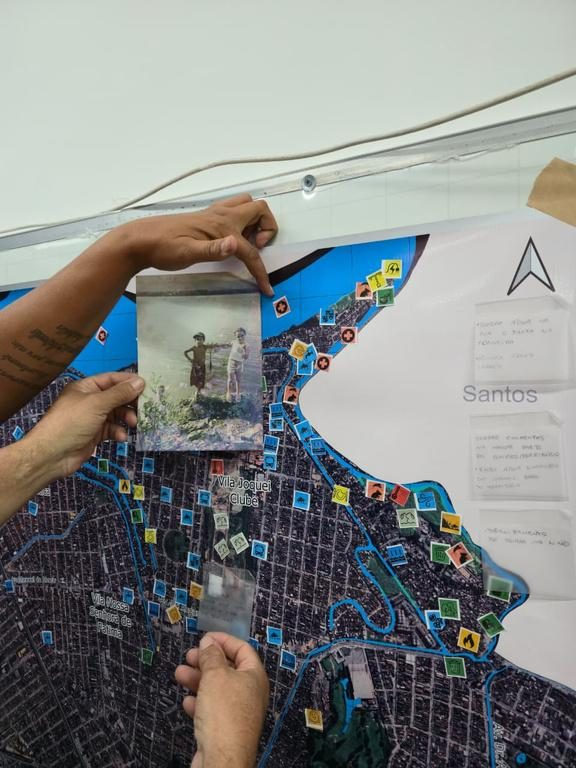
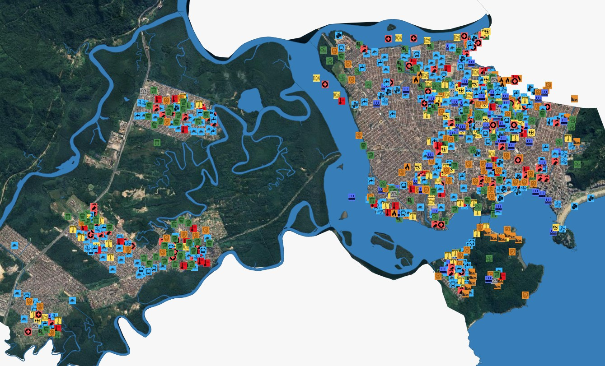

Memória dos territórios
Resgate da memória dos territórios e das comunidades: o que o lugar já foi e o que ficou registrado na lembrança de quem mora nele.
O retrato de São Vicente (SP) bairro a bairro, feito para a população com dados públicos oficiais — livres para consulta, download e reuso.
Quantas pessoas vivem em cada bairro e com que renda, quantas escolas e unidades de saúde existem, onde ficam e o que oferecem — para a cidade inteira ou para um bairro, conforme o filtro verde do topo. O selo ao lado de cada título mostra o conjunto de dados utilizado.
Reunido por bairro, o dado público mostra onde os serviços estão e onde faltam — base para cobrar, planejar e decidir:
Use o filtro de bairro no topo da página (ele acompanha a rolagem) e busque por escola, unidade de saúde, endereço ou CEP. Use o controle no canto superior direito do mapa para ligar/desligar camadas; clique nos pontos para ver detalhes.
Por que isso importa: distância é acesso — o mapa mostra o serviço mais próximo de casa e revela os trechos da cidade que dependem de deslocamentos longos.
Fontes: Escolas — Catálogo de Escolas (INEP/MEC) · Saúde — CNES, Cadastro Nacional de Estabelecimentos de Saúde (DATASUS/Ministério da Saúde) · base cartográfica — © colaboradores do OpenStreetMap
Listas completas que respondem ao filtro de bairro e à busca do mapa acima — o que você buscar lá aparece destacado aqui e no mapa.
Por que isso importa: cada linha é um equipamento real, com endereço e telefone — serve para resolver um problema concreto e para conferir, unidade por unidade, os números dos indicadores e gráficos.
| Escola | Categoria | Bairro | Endereço | Telefone | Porte | Etapas | Status |
|---|
Fonte: Catálogo de Escolas (INEP/MEC)
| Unidade | Bairro | Endereço | Telefone | Turno | SUS | Serviços |
|---|
Fonte: CNES, Cadastro Nacional de Estabelecimentos de Saúde (DATASUS/Ministério da Saúde)
Conheça um pouco da cidade — história, características e notícias recentes.
Por que isso importa: número sem contexto engana — a história da cidade, sua divisão entre área insular e continental e o avanço do mar ajudam a entender por que os indicadores variam tanto entre bairros.
Além dos dados oficiais, o painel escuta quem vive a cidade. As OPA! foram um processo de escuta territorial do COOP Clima São Vicente, construído junto com lideranças comunitárias, gestão municipal e universidades, com o objetivo de fortalecer a participação social e o diálogo, por meio de uma construção coletiva com as comunidades.
Por que isso importa: os cadastros federais dizem quantos equipamentos existem, não o que as pessoas sentem falta ou querem mudar — as OPA! trazem esse conhecimento para o painel. Seção editorial e de escopo fixo: não muda com o filtro de bairro.
Cada oficina percorreu três tempos do mesmo lugar — o que ele foi, o que ele é e o que a comunidade quer que ele seja.
Resgate da memória dos territórios e das comunidades: o que o lugar já foi e o que ficou registrado na lembrança de quem mora nele.
Leitura coletiva do território como ele é hoje — problemas enfrentados no dia a dia e potencialidades que já existem no bairro.
Convite às comunidades para pensarem o futuro que desejam para seus territórios, apontando caminhos e prioridades.
As OPA! não foram desenhadas em gabinete: cada etapa passou pela gestão pública, pelas universidades e pelas lideranças comunitárias.
Diversas oficinas e dinâmicas entre a gestão pública e as universidades para elaborar o desenho das OPA!
Depois do desenho inicial, as oficinas foram sendo desenvolvidas em reuniões com a equipe acadêmica, a gestão pública e as lideranças comunitárias.
Enquanto as oficinas eram pensadas, a equipe se capacitou para garantir que as OPA! fossem um espaço de escuta acolhedor a todos.
Definição de datas, locais e atividades junto com as lideranças locais, a gestão municipal e a equipe acadêmica.
As 11 oficinas foram realizadas nos territórios a partir dessa preparação. As datas de cada encontro não constam no material de origem desta seção.
São Vicente foi dividida em seis áreas de trabalho, cobrindo tanto a porção insular quanto a continental. Cada área teve uma facilitadora local, e duas frentes temáticas atravessaram todo o município.




Somando o que foi marcado em todas as oficinas, os participantes apontaram 968 pontos sobre o mapa da cidade — cada ícone é um lugar que alguém conhece, usa, evita ou gostaria de ver mudar.

Fonte: COOP Clima São Vicente — Oficinas Participativas de Avaliação (OPA!), 2025. Números, percurso, divisão territorial, fotografias e mapas são do acervo do projeto.
Indicadores de toda a cidade.
Por que isso importa: mostram se a oferta de escolas e saúde acompanha o tamanho da população de cada lugar. Com um bairro filtrado, cada card traz também o valor da cidade e a fatia que o bairro representa. Definições no glossário.
Fontes: População, renda e densidade — Censo Demográfico 2022 (IBGE) · Escolas — Catálogo de Escolas (INEP/MEC) · Unidades de saúde — CNES (DATASUS/Ministério da Saúde)
Cada gráfico usa o formato que melhor mostra a comparação entre o bairro escolhido e São Vicente inteira. Como o bairro sempre tem menos unidades que a cidade, os valores aparecem em proporção (%) dentro de cada recorte — assim a comparação é justa. Em todos eles, laranja é o bairro e verde é a cidade. Passe o mouse para ver as porcentagens e os números absolutos.
Por que isso importa: é comparando o perfil do bairro com o da cidade que as desigualdades aparecem — dois bairros podem ter o mesmo número de escolas e ofertas de ensino completamente diferentes. A proporção mostra o que a contagem bruta esconde.
Autodeclaração de cor/raça (Censo) — barras 100%: cada linha soma o total do recorte
Como ler: cada barra é 100% da população do recorte. Compare o tamanho das faixas, não o comprimento total. “Negra” soma preta + parda.
Fonte: Censo Demográfico 2022 (IBGE)
Rosca dupla — anel interno: bairro · anel externo: cidade (só escolas em atividade)
Como ler: cada anel soma 100% — compare as fatias de mesma cor entre o anel de dentro (bairro) e o de fora (cidade). Categoria = quem mantém a escola.
Fonte: Catálogo de Escolas (INEP/MEC)
Radar do perfil de oferta — % das escolas do recorte que atendem cada etapa/modalidade
Como ler: quanto mais longe do centro, maior a fatia de escolas que oferece a etapa (0% no centro, 100% na borda). A soma passa de 100%: uma escola pode oferecer várias.
Fonte: Catálogo de Escolas (INEP/MEC)
Distribuição das escolas pelas faixas de matrícula, da menor para a maior — % do recorte
Como ler: faixas de tamanho da menor à maior; cada linha soma 100%. Pico à esquerda = escolas pequenas; à direita = grandes. O INEP publica faixas, não o número exato.
Fonte: Catálogo de Escolas (INEP/MEC)
Barras lado a lado — % das unidades do recorte que oferecem cada serviço
Como ler: cada par compara a fatia de unidades com aquele serviço no bairro e na cidade; como uma unidade pode ter vários, as barras não somam 100%. Serviços de alta complexidade são raros — barra baixa é o padrão.
Fonte: CNES, Cadastro Nacional de Estabelecimentos de Saúde (DATASUS/Ministério da Saúde)
% das unidades de saúde que atendem pelo SUS — bairro × cidade
Como ler: fatia das unidades que atende pelo SUS, isto é, acessível sem plano de saúde — separa “ter unidade perto” de “ter atendimento disponível”.
Fonte: CNES, Cadastro Nacional de Estabelecimentos de Saúde (DATASUS/Ministério da Saúde)
Comparação entre todos os bairros da cidade (o bairro selecionado fica destacado).
Por que isso importa: a densidade é indicador-chave para adaptação climática — bairros adensados concentram mais gente exposta a calor extremo e alagamentos. Estas listas são sempre da cidade inteira; o filtro só destaca a linha do bairro.
| # | Bairro | Escolas ativas |
|---|
Fonte: Catálogo de Escolas (INEP/MEC)
| # | Bairro | Unidades |
|---|
Fonte: CNES, Cadastro Nacional de Estabelecimentos de Saúde (DATASUS/Ministério da Saúde)
Bairros mais adensados da cidade — indicador-chave para adaptação climática
Como ler: habitantes por hectare (1 ha ≈ um quarteirão); o bairro filtrado fica laranja se estiver entre os 10 primeiros. Densidade alta só vira problema quando escolas, saúde e área verde não acompanham.
Fonte: Censo Demográfico 2022 (IBGE)
Todo dado tem um jeito certo de ser lido — e um limite do que pode afirmar.
Um bairro sempre terá menos escolas que a cidade inteira. Por isso os gráficos usam a fatia (%) de cada recorte e os indicadores trazem medidas relativas.
O painel conta unidades cadastradas — não mede qualidade, vagas, filas nem equipe. Um bairro no topo do ranking pode continuar mal atendido.
Este painel é uma fotografia da extração: endereços e telefones podem ter mudado. E os limites de bairro são os do cadastro oficial, nem sempre iguais aos que os moradores reconhecem.
Os termos usados nos indicadores, gráficos e tabelas.
Decisões de tratamento aplicadas aos arquivos originais — todas no código aberto do projeto.
Todo número vem de uma fonte pública identificável — e você pode baixar, conferir e reaproveitar o que quiser.
Versão gerada em –. Os órgãos de origem atualizam suas bases continuamente: para o dado mais recente, consulte a fonte primária.
| Conjunto de dados | Fonte | Referência | Condição de uso |
|---|---|---|---|
| População, cor/raça, renda e área por bairro | Censo Demográfico — IBGE ↗ | 2022 | Dado público — uso livre com citação |
| Escolas | Catálogo de Escolas — INEP/MEC ↗ | Extração de jul/2026 | Dados abertos federais — uso livre com citação |
| Unidades de saúde | CNES — DATASUS/MS ↗ | Extração de jul/2026 | Dados abertos federais — uso livre com citação |
| Mapa e busca de endereços | OpenStreetMap e Nominatim ↗ | Contínua | ODbL — atribuição obrigatória |
| Fotos da cidade | Wikimedia Commons ↗ | Ver cada imagem | Creative Commons — crédito na legenda |
| Oficinas OPA! · notícias e texto histórico | Acervo do COOP Clima São Vicente · Prefeitura e imprensa regional | 2025–2026 | Uso mediante crédito — fonte em cada card |
Os dados oficiais citados são públicos por força da Lei de Acesso à Informação (Lei nº 12.527/2011). Para uso comercial, confira os termos de cada órgão.
Código, dados tratados e textos próprios estão sob a GNU GPL v3.0 ↗: copie, adapte, publique sua versão — inclusive para outra cidade.
As duas condições: cite a origem e mantenha a mesma licença nos derivados, com o código disponível.
Os dados de origem seguem as licenças dos respectivos produtores, na tabela acima.
Os mesmos dados desta página, tratados e padronizados por bairro, prontos para planilha, QGIS ou script — gerados no seu navegador.
CSV em UTF-8, separador ; — abre direto no Excel e no LibreOffice.
lat/lng vêm vazias sem coordenada válida.
Código e dados brutos: github.com/RodrigoNishimi/lupa-vicentina ↗
–
Ao reutilizar tabelas ou gráficos, cite também a fonte primária do dado.